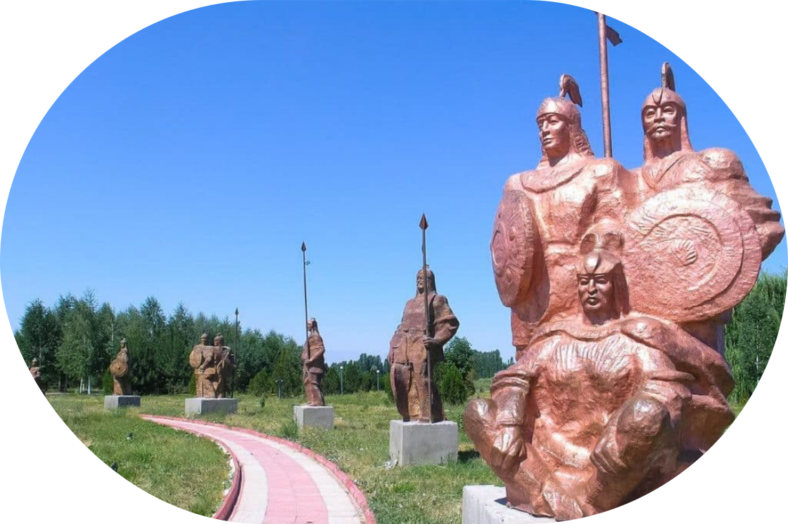

Манастын күмбөзү
Күмбөз Манас – тарыхы, уламыштары жана мааниси
Күмбөзү Манас, “Манас” эпосундагы баатырдын ысымы менен байланышкан Кыргызстандын эң белгилүү архитектуралык эстеликтеринин бири. Бул жөн эле күмбөз эмес, уламыштарга, сырларга толгон ыйык жер. Кыргызстандын эң белгилүү тарыхый эстеликтеринин бири болгон Күмбөз Манас, Талас шаарынан 22 км түндүк-чыгышта Ташарык айылында жайгашкан жана кыргыз элинин бай мурасын чагылдырган маанилүү маданий-тарыхый жай болуп саналат.
.svg)
Күмбөздүн пайда болуу тарыхы
Бул сырдуу түзүлүштүн тарыхы сырлар жана легендалар менен капталган. Бир уламыш боюнча бул күмбөздө легендарлуу Манас баатыр коюлган жана аны уулу Семетей тургузган.
Башка версия боюнча, күмбөздү Манастын ишенимдүү жубайы Каныкей салган. Кирпич жасоо үчүн атайын чопо колдонушкан, ага эчкинин жана уйдун жүнүн кошуп коюшкан. Кирпичтер бышык болсун деп казанга миңдеген кочкордун майы кошулуп кайнатылган. Каныкей бул жерге зер буюмдарды, казыналарды да көмгөн имиш, мүрзөнү каракчылардан сактоо үчүн Кыяняк Хатун бул жерге коюлган деген жазууну жазууну буйруган.
Үчүнчү вариантта Каныкей чындыгында Манастын сөөгүн тоо этегиндеги алыскы үңкүрлөргө катып койгону, күмбөз душмандарды алдоо үчүн гана курулганы айтылат.
Бирок тарыхчылар, археологдор Манастын күмбөзү эмир Абуканын кызы Канизяк-хатундун бейитинин үстүнө 1334-жылы тургузулганын аныкташкан. Курулушка Бухара, Самарканд, Кашкардан усталар чакырылган. Убакыттын өтүшү менен күмбөз башка адамдардын көрүстөнүнө айланган – өлгөндөр күмбөздүн астындагы байыркы табыттарга коюлган, алар убакыттын өтүшү менен талкаланып, алардын ордуна жаңы көрлөр пайда болгон.


Архитектура жана реставрация
Манастын күмбөзү төрт бурчтуу, бир камералуу бөлмө. Анын тышкы өлчөмдөрү 6,8 м × 7,1 м, бийиктиги 11 метрге жетет. Дубалдардын калыңдыгы айрым жерлерде 1 метрден ашат. Имарат куполдуу сегиз бурчтуу чатыр менен бүткөрүлгөн.
Күмбөз бышкан кирпичтен тургузулуп, анын фасады кыргыздын улуттук оймо-чиймелерин эске салган геометриялык жана гүлдүү оймо-чиймелер менен кооздолгон. Ошондой эле дизайнда күн нурунда жарык менен көлөкөнүн кызыктуу оюнун жараткан каллиграфиялык жазууларды көрүүгө болот.
Манастын күмбөзү Кыргызстандын архитектурасынын өнүгүшүнө зор таасири болгон. 1970-жылы советтик окумуштуулар аны реставрациялап, акыркы реставрация иштери 1994-жылы «Манас» эпосунун 1000 жылдыгына карата бүткөрүлгөн.
"Манас Ордо" комплекси
1970-жылы Манастын күмбөзү реконструкциялангандан кийин кыргыз улуттук “Манас Ордо” комплексинин тарыхы башталган. 225 гектар аянтты ээлеген бул мемориалдык комплекс Манастын күмбөзүн, музей-коруктун жана мечитти камтыйт. Бардык имараттар кыргыз элинин бай маданий мурасын чагылдырган салттуу улуттук стилде жасалган.
«Манас Ордо» уюшулгандан бери бир нече жолу кайра уюштурулган. Алгач адабий-этнографиялык музей болуп, кийин музей-корук, кийин аймактык комплекс статусун алып, 2001-жылы «Манас Ордо» улуттук комплексине айланган.
Бул жерден археологиялык эстеликтерди, аскага тартылган сүрөттөрдү, таш скульптураларды, дөбөлөрдү жана петроглифтерди, ошондой эле байыркы руникалык жазууларды көрүүгө болот. Комплекстин ар бир элементи кыргыз элинин тарыхын сактап, Манастын легендарлуу доору менен байланышкан.
Археологдордун талаш-тартыштарына жана манасчылардын уламыштарына карабастан, Манастын күмбөзү Кыргызстандын эң маанилүү архитектуралык жана маданий эстеликтеринин бири бойдон калууда, ал дүйнөнүн булуң-бурчунан миңдеген конокторду өзүнө тартып турат.
Так жайгашкан жери:
Координаттары: 42.8652° N, 72.9880° E
Бишкектен унаа менен баруу убактысы: болжол менен 8–9 саат